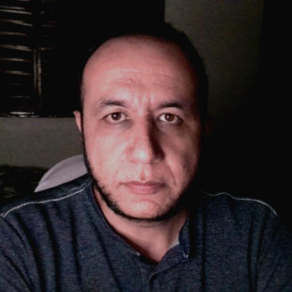

Renato Oliveira Ramalho
(31) 98734-3242 / renatoramalho1986@gmail.com
OBJETIVO
Trabalhar na área da T. I. como Analista de Sistemas, Desenvolvedor de Software ou WEB, ou QA/Testes.
PERFIL PROFISSIONAL
Boa comunicação, bom relacionamento interpessoal, comprometido com os resultados, interessado aprender e evoluir, metódico, busco na área da T. I. uma realização pessoal e profissional.
EXPERIÊNCIAS PROFISSIONAIS
- Profissional Liberal: Advogado Cível, Consumo, Previdenciário e Trabalhista, em exercício desde outubro de 2012.
- Interclip Clipping e Monitoramento: Monitor de Clipping, Jan/2012 a dez/2012.
- Justiça Federal: Estagiário de Direito, de jul/2010 a jul/2011.
- Toshiba do Brasil: Projetista de Máquinas e Inst. Mecânicas, de mar/2006 a nov/2009.
- Hidráulica Engenharia de Sistemas: Estagiário Técnico em Mecânica, de 2004 a 2005.
FORMAÇÃO ACADÊMICA
- Análise e Desenvolvimento de Sistemas: Pitágoras, em andamento, 4º Período. Previsão de conclusão até dezembro de 2024.
- Bacharel em Direito: FEAD Minas, início em 2006, concluído em 2011.
- Técnico em Mecânica Industrial: CEFET-MG, início em 2003, concluído em 2007.
CURSOS
- Diversos cursos concluídos e em andamento sobre os seguintes temas: HTML, CSS, JavaScript, ShellScript, Modelagem de Banco de Dados, Git e GitHub, e outros que me tornem mais preparado pra ser selecionado em uma das vagas que me candidato.
HABILIDADES
- Inglês - Básico em conversação, intermediário em leitura, acostumado com leituras técnicas da área da T.I., (ex: busca de soluções para dúvidas em sites como Stack Overflow, leituras de projetos hospedados no Github, etc.)
- Hardware - Boa compreensão dos componentes de hardware, princípio de funcionamento e suas finalidades, sejam processadores, memórias ram, unidades de armazenamento, placas-mãe e demais periféricos, prática em montagem e manutenção de computadores, configurações de BIOS e para extrair uma maior eficiência da máquina, gosto de estar sempre atualizado das novas tecnologias que surgem na área.
- Linux - Usuário linux (Ubuntu) há 8 anos, familiarizado com uso do terminal, instalação de programas via terminal utilizando o apt, compilação de programas a partir da clonagem de repositórios como os do GitHub, frequentemente apresento soluções para usuários do sistema em meu canal no YouTube.
- Metodologias Ágeis - Estudo da metodologia Scrum visando estar atualizado da cerca das metodologias mais utilizadas no mercado da T. I. para desenvolvimento de software com bom estado produtivo.
- Programas - Assistência remota com o AnyDesk, edições de audio com o Audacity, edição de imagens com o GIMP, edição de vídeos com o ffmpeg, Handbrake e Kdenlive, uso do LibreOffice para trabalhar textos e planilhas, compilação de programas via Terminal clonando repositórios do GitHub, criação de máquinas virtuais com o Virtualbox, desenvolvimento WEB com o Sublime Text e Visual Studio Code entre outros.
- Scripts de Automação - Criação de scripts para automação de tarefas usando ShellScript, alguns deles estão disponíveis no GitHub.
 Github
Github
 LinkedIn
YouTube
LinkedIn
YouTube
 WhatsApp
WhatsApp